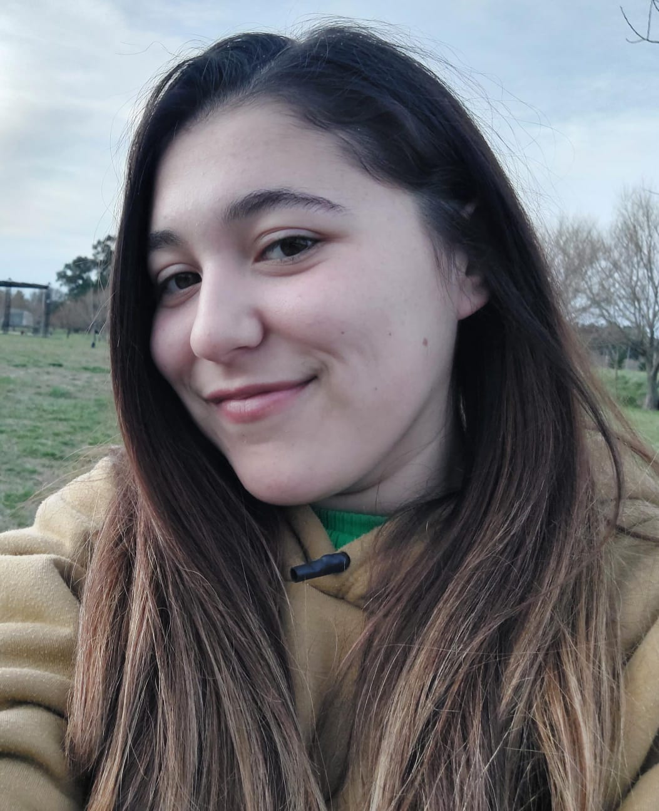

Manuela Aylen Navarrete
Tecnicatura en Multimedios
Sobre Mi
Soy Egresada de la Tecnicatura en Multimedios de la Escuela de Educación Secundaria Técnica N°1 de lobería
Datos Generales
Fecha de nacimiento:
20/10/2002
Gmail:
manuelanavarrete139@gmail.com
Estado civil:
Soltera
Edad:21 año
DNI: 43970134
Dirección: Macias 279
Telefono: (2262)-650633
Formación Academica
Escuela Primaria: 2007-2014 E.E.P N°7 (Hipolita Irigoyen)
Escuela Secundaria: 2015-2021 N°1 Dr.Rene Favaloro de lobería
Formación complementaria: Cursos
Coordinadora turística en el aula movil en lobería
Diseño de piezas graficas
Edicion de imagenes digitales
Operación de herramientas de marketing y venta digital
Diplomatura de desarrollo de paginas web